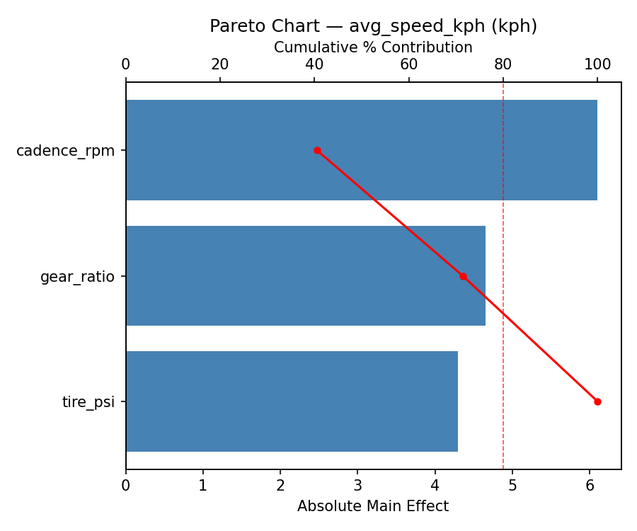
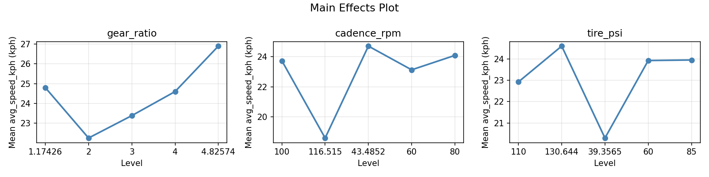
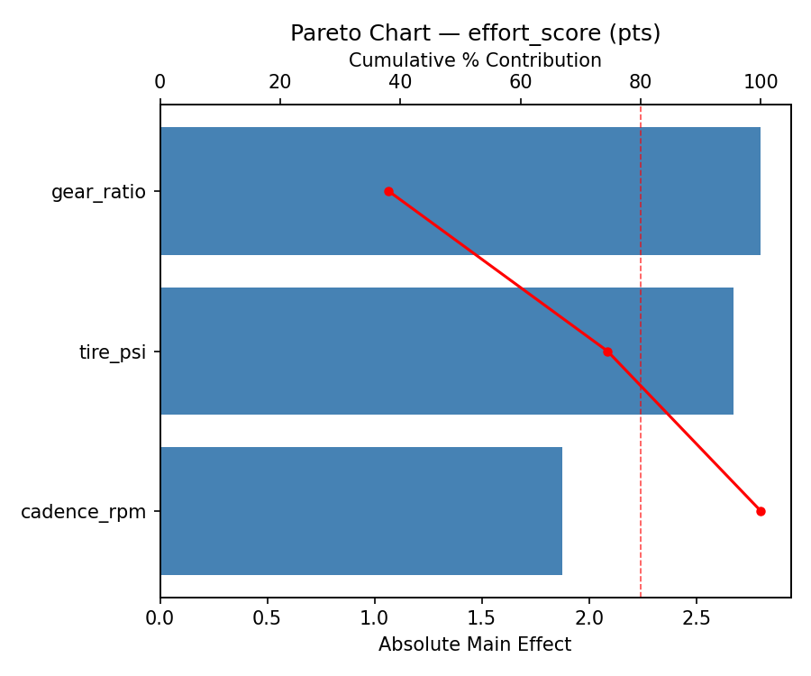
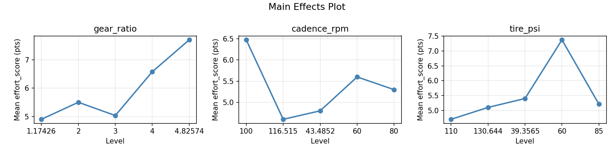
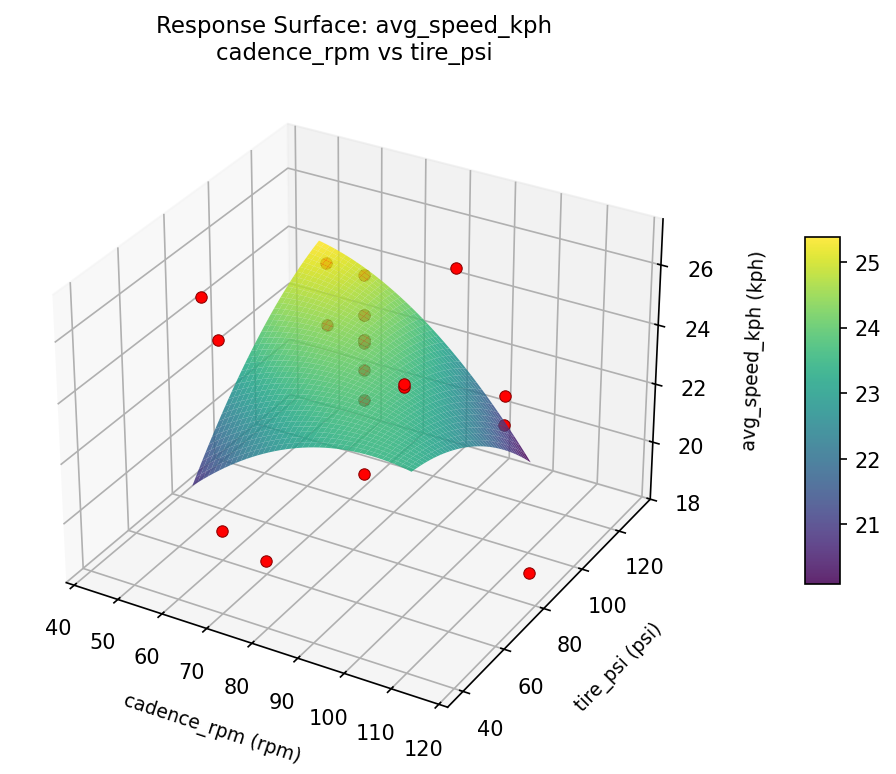
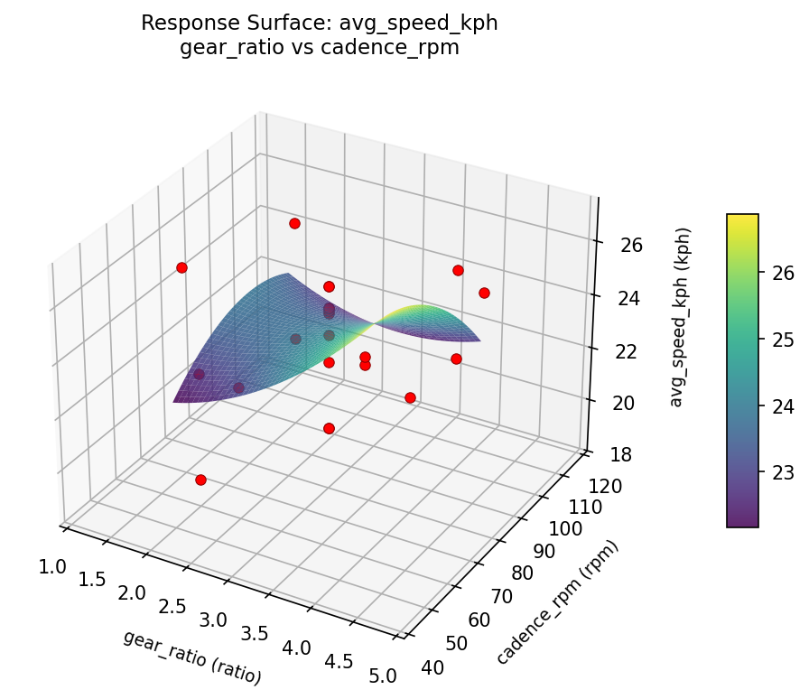
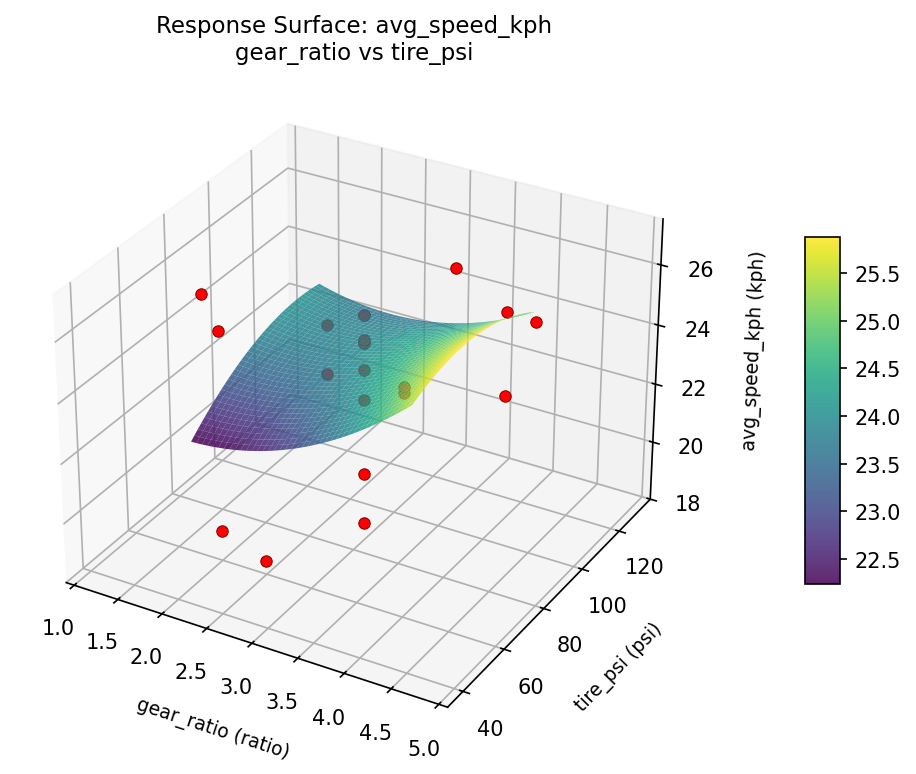
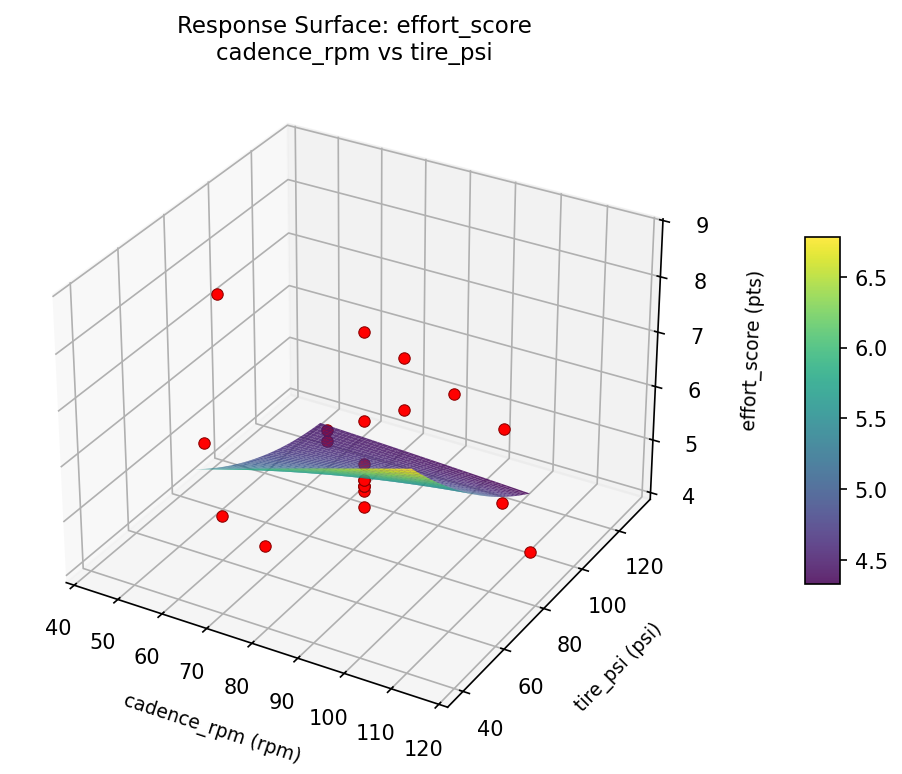
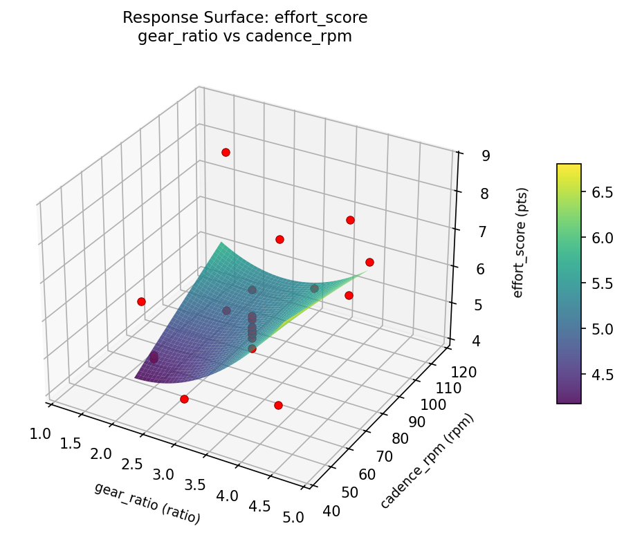
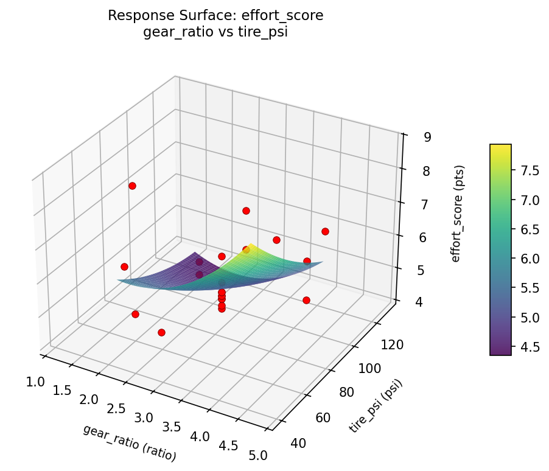

Summary
This experiment investigates bicycle gearing & cadence. Central composite design to maximize average speed and minimize perceived effort by tuning gear ratio, cadence, and tire pressure.
The design varies 3 factors: gear ratio (ratio), ranging from 2.0 to 4.0, cadence rpm (rpm), ranging from 60 to 100, and tire psi (psi), ranging from 60 to 110. The goal is to optimize 2 responses: avg speed kph (kph) (maximize) and effort score (pts) (minimize). Fixed conditions held constant across all runs include terrain = rolling_hills, rider weight = 75kg.
A Central Composite Design (CCD) was selected to fit a full quadratic response surface model, including curvature and interaction effects. With 3 factors this produces 22 runs including center points and axial (star) points that extend beyond the factorial range.
Quadratic response surface models were fitted to capture potential curvature and factor interactions. The RSM contour plots below visualize how pairs of factors jointly affect each response.
Key Findings
For avg speed kph, the most influential factors were cadence rpm (40.5%), gear ratio (30.9%), tire psi (28.6%). The best observed value was 26.9 (at gear ratio = 2, cadence rpm = 100, tire psi = 110).
For effort score, the most influential factors were gear ratio (38.1%), tire psi (36.4%), cadence rpm (25.5%). The best observed value was 4.2 (at gear ratio = 3, cadence rpm = 80, tire psi = 85).
Recommended Next Steps
- Run confirmation experiments at the predicted optimal settings to validate the model.
- Consider whether any fixed factors should be varied in a future study.
Experimental Setup
Factors
| Factor | Low | High | Unit |
|---|
gear_ratio | 2.0 | 4.0 | ratio |
cadence_rpm | 60 | 100 | rpm |
tire_psi | 60 | 110 | psi |
Fixed: terrain = rolling_hills, rider_weight = 75kg
Responses
| Response | Direction | Unit |
|---|
avg_speed_kph | ↑ maximize | kph |
effort_score | ↓ minimize | pts |
Configuration
{
"metadata": {
"name": "Bicycle Gearing & Cadence",
"description": "Central composite design to maximize average speed and minimize perceived effort by tuning gear ratio, cadence, and tire pressure"
},
"factors": [
{
"name": "gear_ratio",
"levels": [
"2.0",
"4.0"
],
"type": "continuous",
"unit": "ratio"
},
{
"name": "cadence_rpm",
"levels": [
"60",
"100"
],
"type": "continuous",
"unit": "rpm"
},
{
"name": "tire_psi",
"levels": [
"60",
"110"
],
"type": "continuous",
"unit": "psi"
}
],
"fixed_factors": {
"terrain": "rolling_hills",
"rider_weight": "75kg"
},
"responses": [
{
"name": "avg_speed_kph",
"optimize": "maximize",
"unit": "kph"
},
{
"name": "effort_score",
"optimize": "minimize",
"unit": "pts"
}
],
"settings": {
"operation": "central_composite",
"test_script": "use_cases/121_bicycle_gear_cadence/sim.sh"
}
}
Experimental Matrix
The Central Composite Design produces 22 runs. Each row is one experiment with specific factor settings.
| Run | gear_ratio | cadence_rpm | tire_psi |
|---|
| 1 | 3 | 80 | 85 |
| 2 | 4 | 60 | 110 |
| 3 | 2 | 100 | 60 |
| 4 | 3 | 116.515 | 85 |
| 5 | 3 | 80 | 85 |
| 6 | 1.17426 | 80 | 85 |
| 7 | 3 | 80 | 39.3565 |
| 8 | 3 | 80 | 85 |
| 9 | 4 | 100 | 60 |
| 10 | 4.82574 | 80 | 85 |
| 11 | 3 | 80 | 85 |
| 12 | 3 | 43.4852 | 85 |
| 13 | 3 | 80 | 85 |
| 14 | 2 | 60 | 110 |
| 15 | 3 | 80 | 85 |
| 16 | 4 | 60 | 60 |
| 17 | 3 | 80 | 130.644 |
| 18 | 4 | 100 | 110 |
| 19 | 3 | 80 | 85 |
| 20 | 2 | 60 | 60 |
| 21 | 2 | 100 | 110 |
| 22 | 3 | 80 | 85 |
Step-by-Step Workflow
1
Preview the design
$ python doe.py info --config use_cases/121_bicycle_gear_cadence/config.json
2
Generate the runner script
$ python doe.py generate --config use_cases/121_bicycle_gear_cadence/config.json \
--output use_cases/121_bicycle_gear_cadence/results/run.sh --seed 42
3
Execute the experiments
$ bash use_cases/121_bicycle_gear_cadence/results/run.sh
4
Analyze results
$ python doe.py analyze --config use_cases/121_bicycle_gear_cadence/config.json
5
Get optimization recommendations
$ python doe.py optimize --config use_cases/121_bicycle_gear_cadence/config.json
6
Generate the HTML report
$ python doe.py report --config use_cases/121_bicycle_gear_cadence/config.json \
--output use_cases/121_bicycle_gear_cadence/results/report.html
Real-World Experiment Workflow
ℹ
Physical Vehicle Test? Use the Manual Workflow
Automotive experiments require real driving conditions, fuel consumption measurement, and physical equipment adjustments. The simulation script above is for demonstration. For your real experiments, use record, status, and export-worksheet.
$ python doe.py export-worksheet --config use_cases/121_bicycle_gear_cadence/config.json \
--format csv --output worksheet.csv
$ python doe.py status --config use_cases/121_bicycle_gear_cadence/config.json
$ python doe.py record --config use_cases/121_bicycle_gear_cadence/config.json --run 1
$ python doe.py analyze --config use_cases/121_bicycle_gear_cadence/config.json --partial
$ python doe.py analyze --config use_cases/121_bicycle_gear_cadence/config.json
$ python doe.py optimize --config use_cases/121_bicycle_gear_cadence/config.json
$ python doe.py report --config use_cases/121_bicycle_gear_cadence/config.json \
--output report.html
✔
Works Without a Test Script
The analysis pipeline doesn't care how results were produced. Record your measurements with record, and the full analysis, optimization, and reporting pipeline works identically. Use --partial to get early insights before all runs are complete.
Features Exercised
| Feature | Value |
|---|
| Design type | central_composite |
| Factor types | continuous (all 3) |
| Arg style | double-dash |
| Responses | 2 (avg_speed_kph ↑, effort_score ↓) |
| Total runs | 22 |
Analysis Results
Generated from actual experiment runs using the DOE Helper Tool.
Response: avg_speed_kph
Top factors: cadence_rpm (40.5%), gear_ratio (30.9%), tire_psi (28.6%).
Pareto Chart

Main Effects Plot

Response: effort_score
Top factors: gear_ratio (38.1%), tire_psi (36.4%), cadence_rpm (25.5%).
Pareto Chart

Main Effects Plot

Response Surface Plots
3D surfaces fitted with quadratic RSM. Red dots are observed data points.
avg speed kph cadence rpm vs tire psi

avg speed kph gear ratio vs cadence rpm

avg speed kph gear ratio vs tire psi

effort score cadence rpm vs tire psi

effort score gear ratio vs cadence rpm

effort score gear ratio vs tire psi

Full Analysis Output
RSM surface: rsm_avg_speed_kph_gear_ratio_vs_cadence_rpm.png
RSM surface: rsm_avg_speed_kph_gear_ratio_vs_tire_psi.png
RSM surface: rsm_avg_speed_kph_cadence_rpm_vs_tire_psi.png
RSM surface: rsm_effort_score_gear_ratio_vs_cadence_rpm.png
RSM surface: rsm_effort_score_gear_ratio_vs_tire_psi.png
RSM surface: rsm_effort_score_cadence_rpm_vs_tire_psi.png
=== Main Effects: avg_speed_kph ===
Factor Effect Std Error % Contribution
--------------------------------------------------------------
cadence_rpm 6.1000 0.5021 40.5%
gear_ratio 4.6500 0.5021 30.9%
tire_psi 4.3000 0.5021 28.6%
=== Summary Statistics: avg_speed_kph ===
gear_ratio:
Level N Mean Std Min Max
------------------------------------------------------------
1.17426 1 24.8000 0.0000 24.8000 24.8000
2 4 22.2500 2.8243 19.0000 25.7000
3 12 23.3833 2.3587 18.6000 25.6000
4 4 24.6000 1.5470 22.3000 25.6000
4.82574 1 26.9000 0.0000 26.9000 26.9000
cadence_rpm:
Level N Mean Std Min Max
------------------------------------------------------------
100 4 23.7250 2.2603 21.3000 25.7000
116.515 1 18.6000 0.0000 18.6000 18.6000
43.4852 1 24.7000 0.0000 24.7000 24.7000
60 4 23.1250 2.9500 19.0000 25.4000
80 12 24.0833 2.0243 20.3000 26.9000
tire_psi:
Level N Mean Std Min Max
------------------------------------------------------------
110 4 22.9250 1.6091 21.3000 25.1000
130.644 1 24.6000 0.0000 24.6000 24.6000
39.3565 1 20.3000 0.0000 20.3000 20.3000
60 4 23.9250 3.2857 19.0000 25.7000
85 12 23.9500 2.3497 18.6000 26.9000
=== Main Effects: effort_score ===
Factor Effect Std Error % Contribution
--------------------------------------------------------------
gear_ratio 2.8000 0.2860 38.1%
tire_psi 2.6750 0.2860 36.4%
cadence_rpm 1.8750 0.2860 25.5%
=== Summary Statistics: effort_score ===
gear_ratio:
Level N Mean Std Min Max
------------------------------------------------------------
1.17426 1 4.9000 0.0000 4.9000 4.9000
2 4 5.5000 2.0116 4.2000 8.5000
3 12 5.0333 0.4228 4.5000 6.1000
4 4 6.5750 1.9363 4.4000 8.7000
4.82574 1 7.7000 0.0000 7.7000 7.7000
cadence_rpm:
Level N Mean Std Min Max
------------------------------------------------------------
100 4 6.4750 1.9414 4.2000 8.5000
116.515 1 4.6000 0.0000 4.6000 4.6000
43.4852 1 4.8000 0.0000 4.8000 4.8000
60 4 5.6000 2.0704 4.4000 8.7000
80 12 5.3000 0.8528 4.5000 7.7000
tire_psi:
Level N Mean Std Min Max
------------------------------------------------------------
110 4 4.7000 0.6218 4.2000 5.6000
130.644 1 5.1000 0.0000 5.1000 5.1000
39.3565 1 5.4000 0.0000 5.4000 5.4000
60 4 7.3750 1.8464 4.7000 8.7000
85 12 5.2083 0.8836 4.5000 7.7000
Pareto chart (avg_speed_kph): use_cases/121_bicycle_gear_cadence/results/analysis/pareto_avg_speed_kph.png
Pareto chart (effort_score): use_cases/121_bicycle_gear_cadence/results/analysis/pareto_effort_score.png
Main effects (avg_speed_kph): use_cases/121_bicycle_gear_cadence/results/analysis/main_effects_avg_speed_kph.png
Main effects (effort_score): use_cases/121_bicycle_gear_cadence/results/analysis/main_effects_effort_score.png
Optimization Recommendations
=== Optimization: avg_speed_kph ===
Direction: maximize
Best observed run: #18
gear_ratio = 2
cadence_rpm = 100
tire_psi = 110
Value: 26.9
RSM Model (linear, R² = 0.0497, Adj R² = -0.1087):
Coefficients:
intercept +23.6227
gear_ratio -0.1595
cadence_rpm +0.3753
tire_psi +0.4778
RSM Model (quadratic, R² = 0.6375, Adj R² = 0.3656):
Coefficients:
intercept +22.4596
gear_ratio -0.1595
cadence_rpm +0.3753
tire_psi +0.4778
gear_ratio*cadence_rpm -1.5500
gear_ratio*tire_psi +1.4250
cadence_rpm*tire_psi +1.3000
gear_ratio^2 +0.7216
cadence_rpm^2 +0.3166
tire_psi^2 +0.7066
Curvature analysis:
gear_ratio coef=+0.7216 convex (has a minimum)
tire_psi coef=+0.7066 convex (has a minimum)
cadence_rpm coef=+0.3166 convex (has a minimum)
Notable interactions:
gear_ratio*cadence_rpm coef=-1.5500 (antagonistic)
gear_ratio*tire_psi coef=+1.4250 (synergistic)
cadence_rpm*tire_psi coef=+1.3000 (synergistic)
Predicted optimum (from quadratic model):
gear_ratio = 2
cadence_rpm = 100
tire_psi = 110
Predicted value: 26.6419
Model quality: Moderate fit — use predictions directionally, not precisely.
Factor importance:
1. tire_psi (effect: 2.5, contribution: 38.0%)
2. gear_ratio (effect: 2.4, contribution: 36.6%)
3. cadence_rpm (effect: 1.7, contribution: 25.5%)
=== Optimization: effort_score ===
Direction: minimize
Best observed run: #14
gear_ratio = 3
cadence_rpm = 80
tire_psi = 85
Value: 4.2
RSM Model (linear, R² = 0.3336, Adj R² = 0.2225):
Coefficients:
intercept +5.5136
gear_ratio -0.0806
cadence_rpm +0.6510
tire_psi +0.6551
RSM Model (quadratic, R² = 0.7068, Adj R² = 0.4869):
Coefficients:
intercept +5.0163
gear_ratio -0.0806
cadence_rpm +0.6510
tire_psi +0.6551
gear_ratio*cadence_rpm -0.3500
gear_ratio*tire_psi +0.5000
cadence_rpm*tire_psi +0.6000
gear_ratio^2 +0.0837
cadence_rpm^2 +0.0237
tire_psi^2 +0.6387
Curvature analysis:
tire_psi coef=+0.6387 convex (has a minimum)
gear_ratio coef=+0.0837 negligible curvature
cadence_rpm coef=+0.0237 negligible curvature
Notable interactions:
cadence_rpm*tire_psi coef=+0.6000 (synergistic)
gear_ratio*tire_psi coef=+0.5000 (synergistic)
gear_ratio*cadence_rpm coef=-0.3500 (antagonistic)
Predicted optimum (from quadratic model):
gear_ratio = 3
cadence_rpm = 80
tire_psi = 130.644
Predicted value: 8.3412
Model quality: Good fit — general trends are captured, some noise remains.
Factor importance:
1. tire_psi (effect: 3.6, contribution: 48.0%)
2. cadence_rpm (effect: 2.6, contribution: 34.8%)
3. gear_ratio (effect: 1.3, contribution: 17.2%)